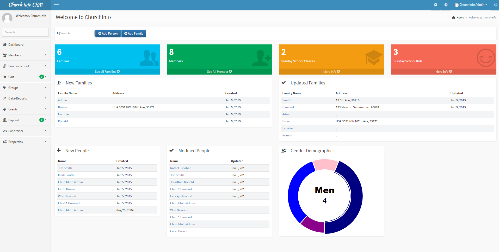
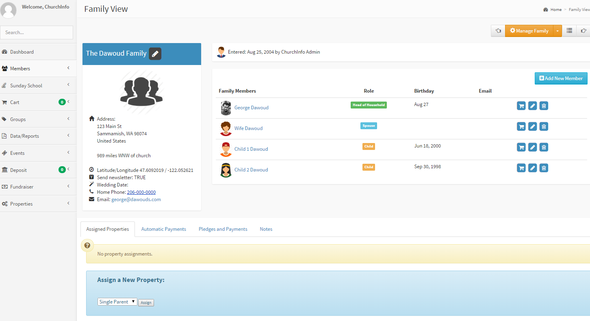
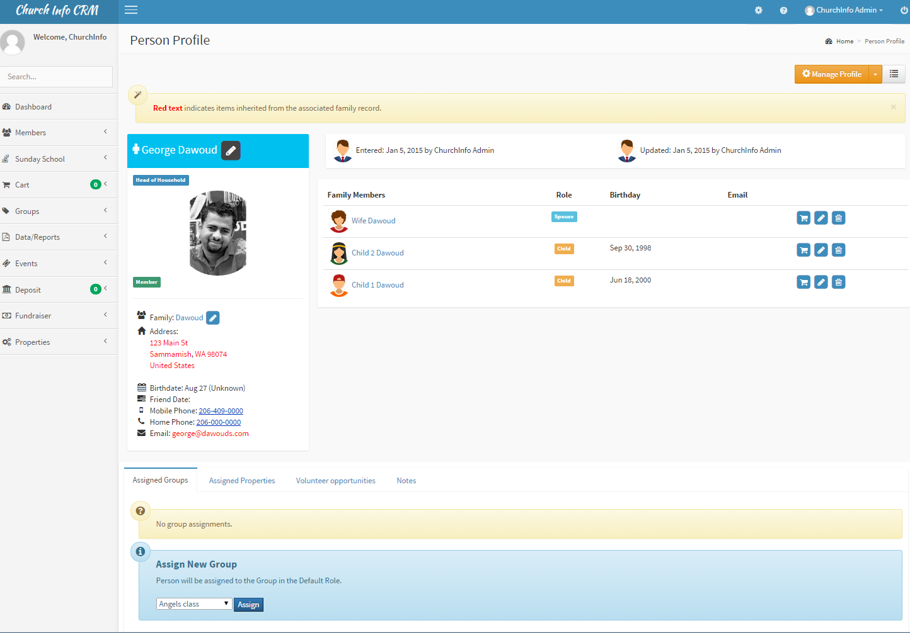
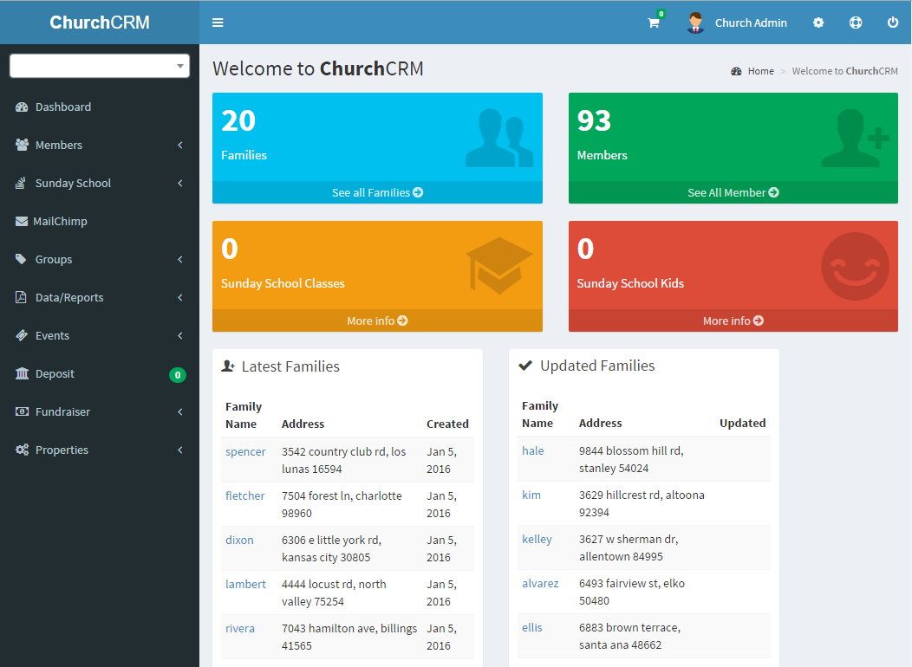

ChurchCRM
Free, Open-Source CRM System Built Specifically for Churches

Empower your church leadership with the tools to manage, connect, and serve your congregation better.
Free, Open-Source CRM System Built Specifically for Churches
Empower your church leadership with the tools to manage, connect, and serve your congregation better.
Real screenshots from ChurchCRM showing powerful features in action

Clean, organized interface for easy navigation through all features

Organize and manage family groups with all member information in one place

Detailed member profiles with contact info, history, and engagement tracking

Fully responsive design - access ChurchCRM from any device, anywhere
Want to explore more? Try the live demo →
No licensing fees, no vendor lock-in. Your data belongs to you. ChurchCRM is completely open source, meaning you can customize it to fit your church's unique needs or deploy it wherever you prefer.
Web-based and mobile-friendly. Access from any device with a browser—desktop, laptop, tablet, or phone. Perfect for church staff managing information on the go or during services.
If your church already has a website, you likely have everything needed. ChurchCRM runs on standard LAMP (Linux, Apache, MySQL, PHP) infrastructure—often available from your existing web host at no extra cost.
Built with security at the core. Control exactly who has access to what information in your congregation. Role-based permissions ensure sensitive data stays protected.
Allow members to verify and update their own family information online.
Allow visitors to register and create accounts for online access.
Organize fundraising campaigns where members buy/sell items or services to benefit the church.
Import member data from CSV or export data for backup and analysis.
Create, manage, and track church events with automatic reminders and participant tracking.
Organize members into groups, committees, and ministry teams for better organization.
Track member skills and availability for church ministries and service opportunities.
Automatically display member photos from Gravatar or upload custom images.
Localization support for multiple languages and regional settings.
Automatic and manual backup options to protect your church data.
Ready to get started? View installation options →